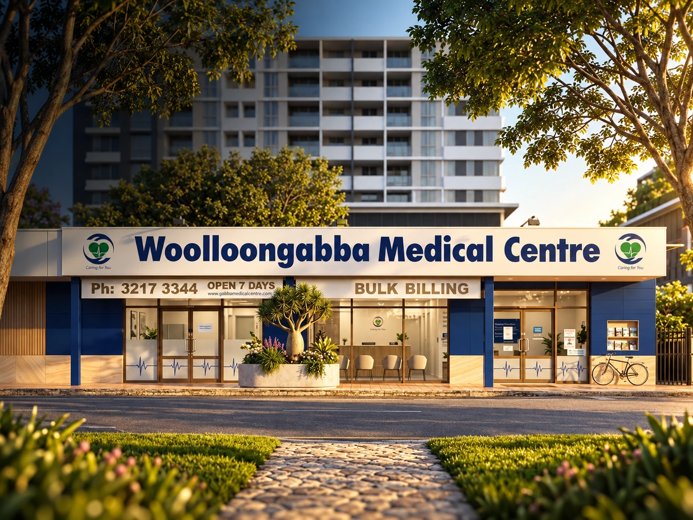

Healthcare access close to home.
Woolloongabba Medical Centre is located at 468 Vulture Street in Woolloongabba and provides general practice care for people living and working across Brisbane’s inner south. Patients choose a practice for different reasons: proximity, continuity with a familiar GP, appointment availability, accessibility or the ability to keep care within one organised practice.
Woolloongabba and nearby communities.
Our local patient community includes Woolloongabba as well as people who travel from East Brisbane, South Brisbane, Kangaroo Point, Greenslopes, Stones Corner and Dutton Park. People also travel from Coorparoo. We do not treat these communities as separate marketing areas. They are neighbouring parts of the wider inner-south community that use many of the same roads, public transport connections, hospitals, schools, workplaces and local services.
If you are travelling from a nearby suburb, use the current directions and public transport information on our Access & Parking page before you leave. Travel conditions and services can change, so current journey planning is more useful than fixed travel-time claims.
What local access means for patients.
Planning your visit.
Before travelling, check the appointment type, current opening hours and any access needs. If you use public transport, the Translink journey planner provides current route information. If you have mobility or accessibility requirements, contact reception before your appointment so practical arrangements can be discussed.